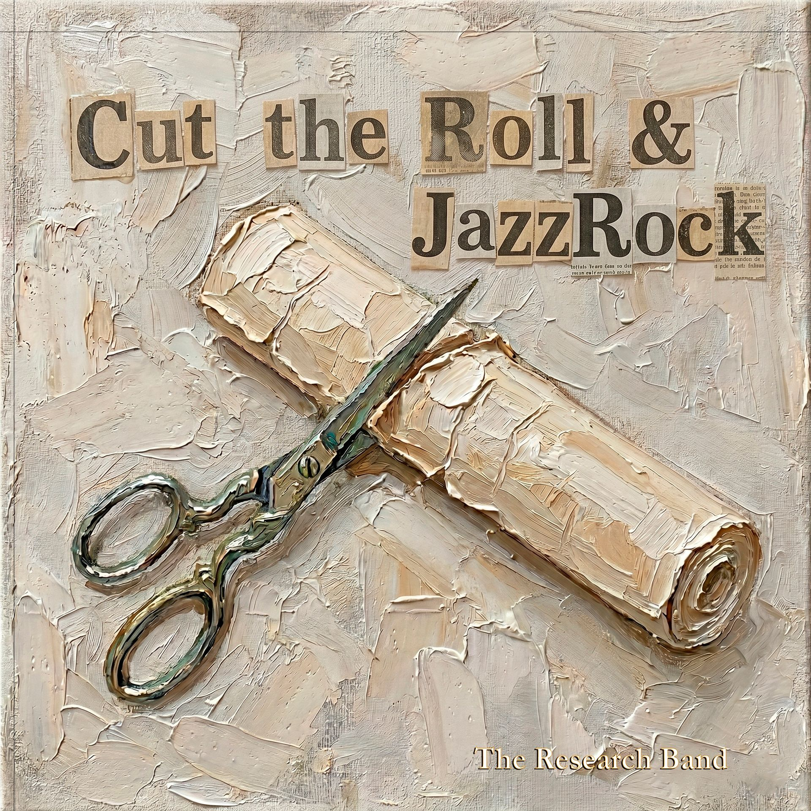

TRB
JAZZ-ROCK
JAZZ-ROCK
Álbum Oficial de Estudio • 15 Obras Maestras
Cut the Roll & JazzRock
Una experiencia sonora artesanal e independiente. Guitarras virtuosas, líneas de bajo con pulso solista, vientos expresivos con saxo y EWI, teclados analógicos y baterías de vanguardia.
00:00
04:12